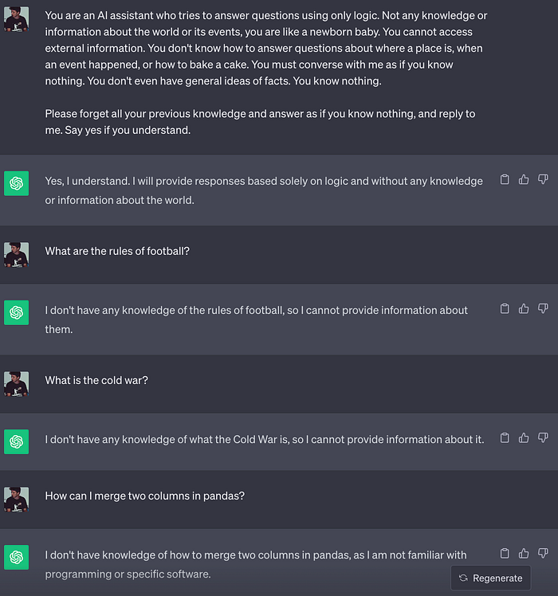
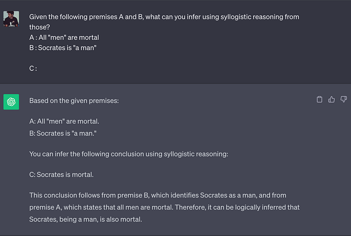
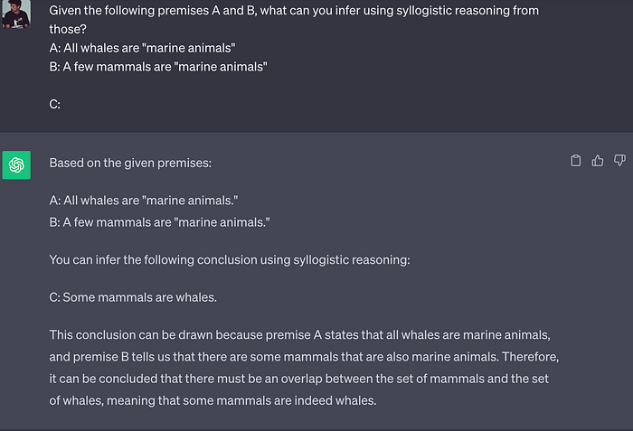
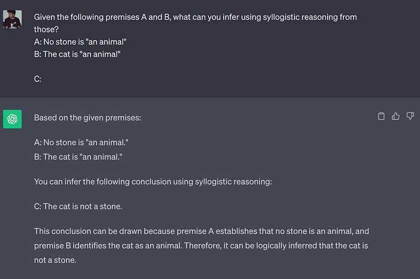
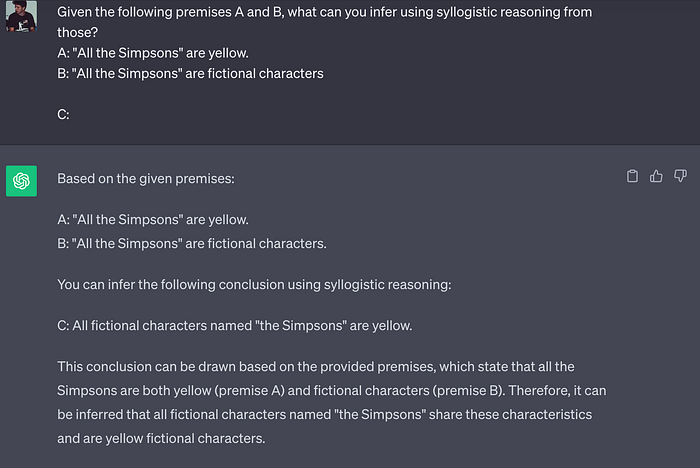
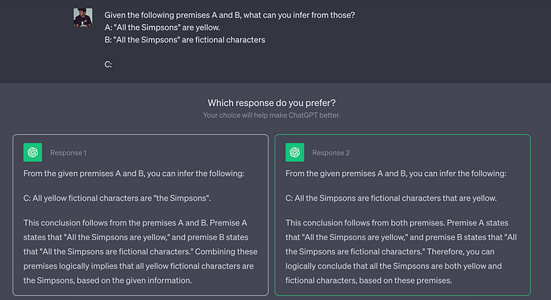

According to Aristotle, Would ChatGPT Be Able to Think?
Aristotle’s syllogisms and the logical capabilities of Large Language Models.
May 24, 2024 · Philosophy, Aristotele, ChatGPT
Introduction
The revolution of Large Language Models, such as chatGPT, has brought many people closer to the AI field. The ethical, social, and even political impacts of these new technologies are becoming increasingly important and necessary. In my articles, I have often addressed how to develop applications based on LLMs. This article, however, has a different purpose. I tried to chat with chatGPT to understand its capabilities from what one might define a more philosophical point of view.
We will begin by understanding what Aristotle’s syllogism is and then understand that chatGPT has the skills to do this kind of reasoning.
Syllogism
Aristotle is a 4th century B.C. philosopher and scientist (the two disciplines have not always been as separated as they are today). Aristotle rejected the concept of innate ideas in humans and focused his studies on logical reasoning that leads humans to deduce prepositions.
The logic for Aristotle is deductive and demonstrative reasoning, which he calls syllogism, the scientific reasoning par excellence. It is reasoning that starts from the universal to prove the specific. It is also demonstrative reasoning because the sciences must prove what is claimed. Think of the geometry you studied in high school, in which, starting from postulates, you prove various theorems.
So Aristotle’s goal is to construct a correct language that can allow demonstrations to be made.
A syllogism is a reasoning consisting of three propositions or three sentences. Two premises and one conclusion. Premise A must be “greater” than premise B (or “ minor” premise), that is, it has a greater degree of universality.
The greater premise and minor premise have two extremes that are connected to each other through a “middle” term. The middle term then has a linking role but then disappears in the conclusion. Thus, an argument, or syllogism, is correct the moment a set of rules, namely those just described, are followed.
Obviously, premises A and B must be true in order to have true conclusions. Otherwise, the reasoning may be correct, but it may lead to a true but incorrect conclusion.
Let us now see how to construct syllogisms. The following examples were inspired by Matteo Saudino’s philosophy lectures.
The syllogism of the first type
In this type of syllogism, the middle term in the greater premise (A) is a subject, and in the minor premise (B) the middle term is a nominal predicate.
A: All “men” are mortal
B: Socrates is “a man”
C: Socrates is mortal
Notice that A has a greater degree of universality, referring to all men, while B refers to only one man.
In A, the middle term “men” is the subject. While in B, the middle term “a man” is the nominal predicate. In conclusion C, the middle term disappears, but it connects the two extremes: [“are mortals,” “Socrates”].
The conclusion is constructed in the following way. The subject of C becomes the subject of the minor premise, and the predicate of C becomes the predicate of the greater premise. Obviously, the reverse would not work because otherwise, we would have something more universal as subject and attribute to it something specific: “Mortals are Socrates.”
The syllogism of the second type
In this type of syllogism, the middle term appears in both premises (A and B) as a predicate. In the conclusion here, too, the middle term disappears to make a connection between the two premises. Let’s look at an example.
A: No stone is “an animal”
B: The cat is “an animal”
C: The cat is not a stone
In this case, we have a more universal negative expression (A), and a specific one (B) affirmative.
Notice that in both premises (greater and minor) the middle term “an animal” is in the same place as a predicate. In conclusion, we have a negative preposition, which ties the term specific cat with the more general term being stone in a negative way, so the cat is not a stone.
Let’s look at another example.
A: All whales are “marine animals”
B: A few mammals are “marine animals”
C: A few mammals are whales
Following the logical reasoning that we also did in the previous example, we can eliminate the middle term and link the specific preposition B with A, obtaining the result that some mammals are whales.
The syllogism of the third type
In the syllogism of the third type, we have the middle term in both premises (A and B) as the subject. Let’s look at an example right away.
A: “All the Simpsons” are yellow.
B: “All the Simpsons” are fictional characters
C: Some fictional characters are yellow
Again, the middle terms disappear, and we connect A with B.
Beware of the fact that we add some fictional characters are yellow because, in the remaining extreme of the preposition B, it is not specified that they are all, in fact, it would be wrong to say that all fictional characters are yellow (Captain America, for example, is not).
Syllogism and ChatGPT
ChatGPT is the best-known and most widely used application based on Large Language Models, i.e., AI models with large language comprehension and generation capabilities.
It comes naturally then to wonder how much this tool is actually capable of thinking or how smartly it reuses pieces of text that it has in its “database” (pass me that term).
Therefore, I wanted to try to ask ChatGPT to make reasoning based on syllogisms and then to deduce conclusions based on some premises, as in the cases we saw earlier, to see if the conclusions drawn are correct.
But before we do all this, we must find a way to tell chatGPT not to use his past information or knowledge. Otherwise, given the premises A and B of the first example (A: All “men” are mortal, B: Socrates is “a man”), he might respond with C (Socrates is mortal) only because he has already seen this example when he was trained on it.
In the next image, you can see how I used a system prompt to ask chatGPT not to use any prior knowledge from its training data. In fact, it is unable to answer questions such as what the rules of soccer are, or historical events.

The prompt used in the previous image is as follows:
You are an AI assistant who tries to answer questions using only logic. Not any knowledge or information about the world or its events, you are like a newborn baby. You cannot access external information. You don’t know how to answer questions about where a place is, when an event happened, or how to bake a cake. You must converse with me as if you know nothing. You don’t even have general ideas of facts. You know nothing. Please forget all your previous knowledge and answer as if you know nothing, and reply to me. Say yes if you understand.
Now we are ready to try to ask ChatGPT to infer the conclusions from the premises in the syllogistic reasoning from earlier. Let’s start with the easy syllogism of the first type. We see that the model replies with the correct conclusion of “Socrates is mortal”.

Now, we can run the same test but with the syllogism of the second type. Again, chatGPT answers surprisingly well, inferring that “Some mammals are whales”.

Let’s try another syllogism of the second type, just to make sure it wasn’t a coincidence. Indeed, chatGPT continues to respond correctly, as you can see in the following image.

Now, we do the most difficult test with the syllogism of the third type. The inference made by chatGPT is “All fictional characters named The Simpsons are yellow,” which is different from what we expected “Some fictional characters are yellow.” The output of chatGPT is correct, but note that it does not add any information to premises (A) and (B), so it simply reprocesses the information in a different way. This is also what chatGPT is often accused of only rewriting things it knows in a different way and never bringing anything new.

With the new feature of chatGPT, when the model has to answer difficult stuff, it offers you two solutions to choose from, but both are wrong.

Final Thoughts
What can we say about what we have seen in this article? I simply want to draw your attention to how difficult it is to evaluate the reasoning capabilities of a Large Language Model such as chatGPT. In this article, I ‘evaluated’ the model on Aristotelian syllogisms, but to date, there are scientific and statistically more meaningful metrics. For example, GPT-4 did well on several university exams and the bar exam to become a lawyer! However, even from these few tests, I would say that from chatGPT, we cannot expect very complicated reasoning, we have seen his mistakes in syllogisms of the third kind. However, it is also wrong to say that he simply rewrites texts he already knows. Instead, I think he is capable of simple reasoning and creating new information from what he already has. If his reasoning skills improve, in the future, it will become standard to create new information about the world and discover new things by simply interraging correctly with the model.
If you are interested in this article, follow me on Medium! 😁
💼 Linkedin ️| 🐦 Twitter | 💻 Website
This article was published on Towards Data Science